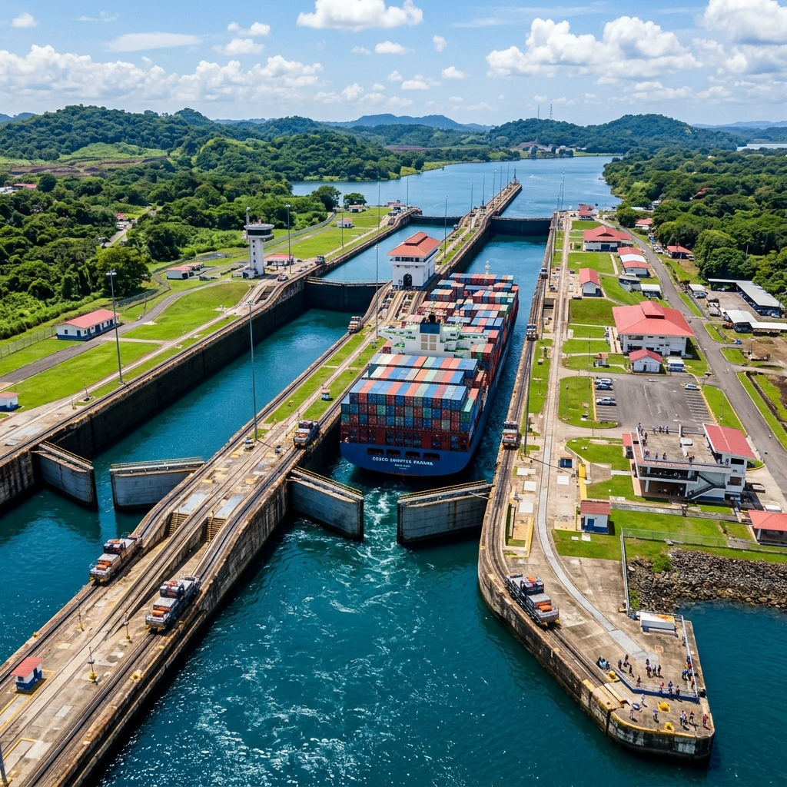
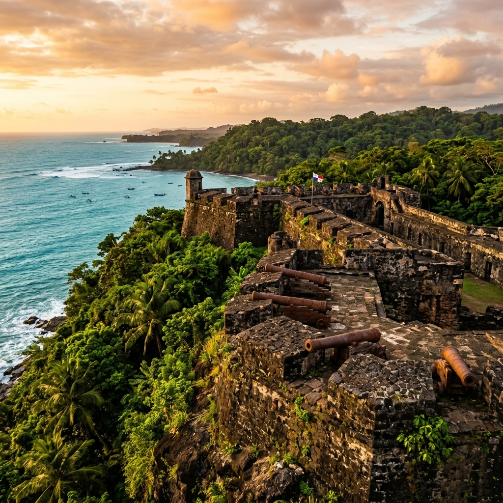
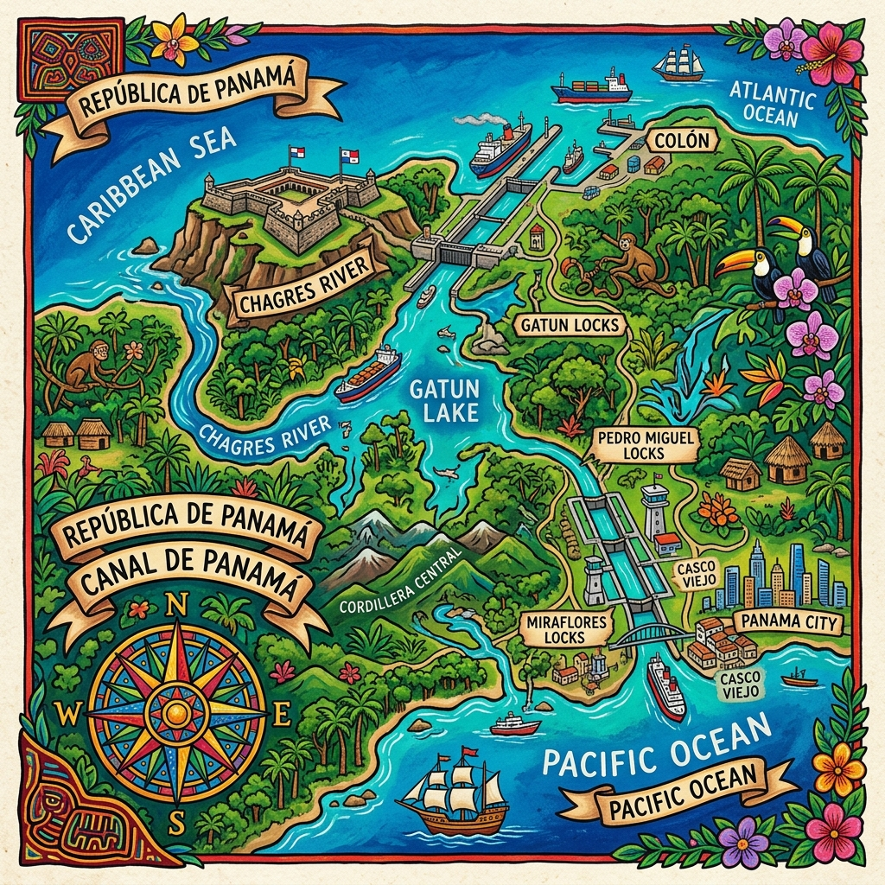

Sumérgete en una experiencia interactiva única. Explora la mítica fortaleza colonial que custodiaba la ruta del oro en el Caribe y simula en tiempo real la física de las esclusas que mueven el comercio mundial.


Ubicado estratégicamente en la desembocadura del Río Chagres en el Caribe, San Lorenzo fue el centinela que protegió la ruta transístmica del oro frente a piratas y corsarios legendarios.
Construido por orden del Rey Felipe II de España a finales del siglo XVI, el fuerte controlaba la entrada de mercancías y tesoros que viajaban desde Perú a través del Camino de Cruces y el Río Chagres con destino a España.
Su ubicación sobre un acantilado de 25 metros de altura le otorgaba un dominio absoluto sobre la boca del río, convirtiéndolo en un objetivo militar codiciado por corsarios como Sir Francis Drake y el temido pirata Henry Morgan, quien lo destruyó en 1671 antes de saquear la Ciudad de Panamá.
Declarado en 1980 por su valor arquitectónico militar.
Descubre los secretos defensivos de la fortaleza colonial.
Sir Francis Drake ataca la desembocadura del Chagres, impulsando la fortificación del acantilado.
El pirata Henry Morgan toma el fuerte tras una cruenta batalla antes de cruzar a Panamá la Vieja.
Diseño del ingeniero militar Ignacio de Sala en piedra labrada neoclásica tal como luce hoy.
Reconocido globalmente como Monumento Histórico y Patrimonio Cultural de la Humanidad.
Una obra colosal inaugurada en 1914 que une el Océano Atlántico con el Océano Pacífico. Aprende interactiva y físicamente cómo funcionan sus compuertas y cámaras de elevación por gravedad.
Haz clic en los botones para avanzar la simulación o usa el modo automático.
Observa cómo el Río Chagres conecta el Fuerte San Lorenzo con la cuenca del Canal de Panamá y el Lago Gatún.

Haz clic en los puntos geográficos para conocer su función histórica:
Entrada natural desde el Mar Caribe utilizada desde el siglo XVI.
Baluarte en el acantilado caribeño que resguardaba el comercio imperial.
El corazón de agua dulce de 435 km² que alimenta las esclusas.
Escalones acuáticos que bajan los buques hacia el Océano Pacífico.
La desembocadura del Río Chagres era la entrada principal para la navegación colonial transístmica.
Demuestra cuánto has aprendido sobre el Fuerte San Lorenzo y el Canal de Panamá.